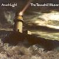

Celtic Lyrics Corner > Artists & Groups > Tannahill Weavers > Arnish Light > Up In The Mornin's No' For Me
|  | Up In The Mornin's No' For Me |
| Credits : | John Hamilton & Robert Burns |
| Appears On : | Arnish Light |
| Language : | Scots-English |
Lyrics :
Cauld blaws the wind frae north tae south
The drift is driving fairly
The sheep are cowerin' in the heugh
Oh sirs, it's winter sairly
Chorus (after each verse)
:
Up in the mornin's no' for me
Up in the mornin' early
When a' the hills are covered wi' snaw
I'm sure that it's winter sairly
Loud roars the blast amang the woods
And tirls the branches barely
On hill and hoose hear how it thuds
The frost is nippin' sairly
The sun peeps ower yon southland hills
Like onie timerous carlie
Just blinks a wee then sinks again
And that we find severely
Nae linties lilt on hedge nor bush
Poor things they suffer sairly
In cauldrife quarters o' the nicht
A' day they feed but sparely
A cosy hoose and a canty wife
Aye keep a body cheerly
And pantries stowed wi' meat and drink
They answer unco rarely